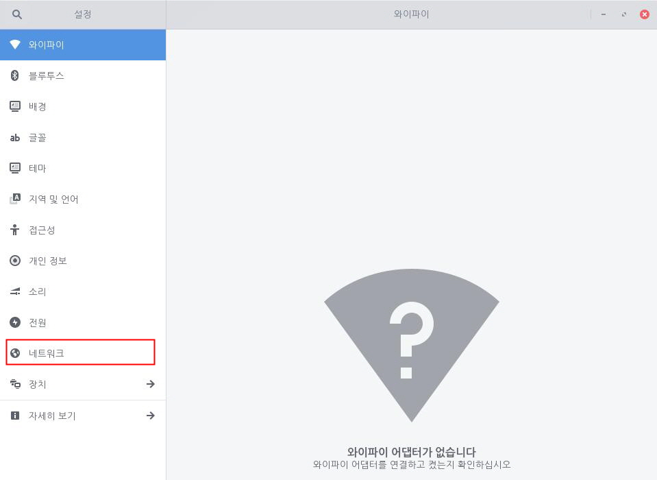
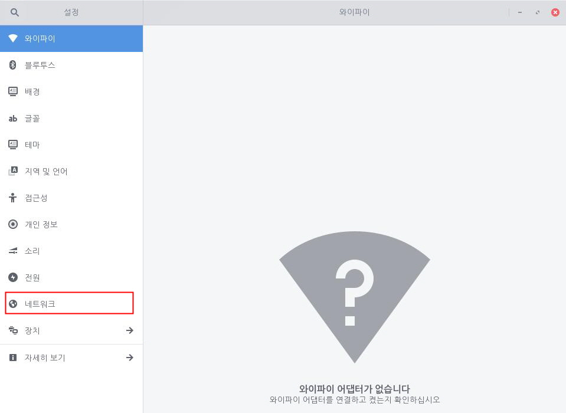
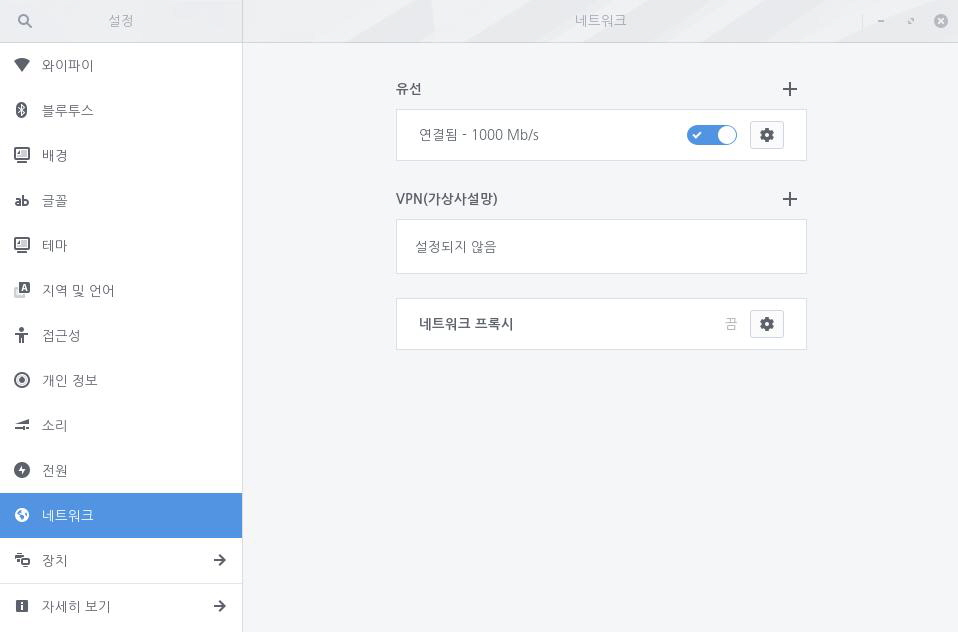
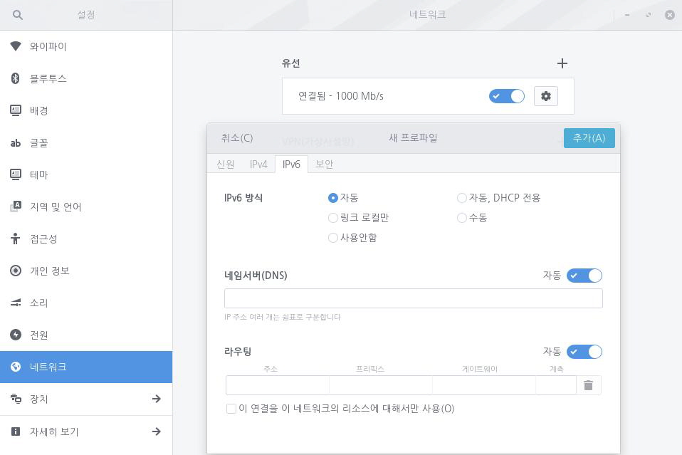

사용자 네트워크가 자동으로 설정되도록 구성되지 않은 경우 사용자가 직접 네트워크 설정 정보를 입력해야 합니다. 이 경우 사용자가 네트워크 사용을 위해 필요한 설정을 알고 있어야 합니다. 만약 이 설정에 대해 모른다면 네트워크 관리자에게 문의하거나 라우터 또는 네트워크 스위치 설정을 확인해야 합니다. 다음 단계를 수행하여 수동으로 네트워크를 설정합니다.1. 좌측 하단의 [시작]아이콘을 클릭하고 검색 창에 "설정"을 입력한 후 [설정] 애플리케이션을 실행합니다.
 2. [설정] 애플리케이션 사이드 바에서 [네트워크]를 클릭합니다.
2. [설정] 애플리케이션 사이드 바에서 [네트워크]를 클릭합니다.
3. 연결된 네트워크 옆 [설정] 아이콘을 클릭하여 [IPv4] 또는 [IPv6] 탭을 선택합니다.4. [수동] 방식을 선택한 후 적절한 IP 주소, 게이트웨이, 네트워크 마스크 정보를 입력합니다. 5. [네임서버(DNS)]에서 [자동] 설정을 끄고 사용자가 원하는 DNS 서버의 IP 주소를 입력합니다. 추가 DNS 서버 주소가 필요한 경우 + 단추를 누릅니다. 6. [라우팅]에서 [자동] 설정을 끄고 사용자가 원하는 라우팅의 주소, 네트워크 마스크, 게이트웨이 및 계측 정보를 입력합니다. 추가 라우팅이 필요한 경우 + 단추를 누릅니다. 7. [적용]을 누릅니다. 이제 네트워크에 연결할 때 고정 IP 주소가 사용됩니다.